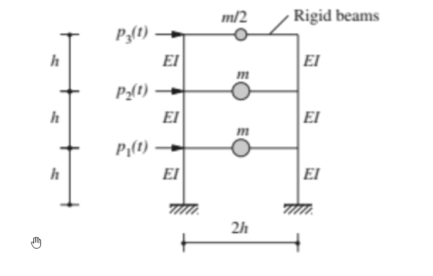

考題編號：SD-2024-1
主分類： SD-U1-3 單自由度、多自由度系統之動態分析及應用
副分類： SD-U1-2 運動方程式推導
分析方法： MDOF模態分析
標籤： MDOF 3自由度 剪力屋架 特徵值問題 自然頻率 模態向量 正規化 模態參與質量 有效質量 質量驗證
1. 原始題目重述 (Problem Restatement)
結構系統： 三層樓剪力屋架（Shear Frame），剛性樓板假設
幾何與材料條件：
- 各層柱高：h（共三層，總高 3h）
- 各層框架寬：2h
- 各層柱截面彎曲勁度：EI（每層各兩根柱）
- 樓板（梁）假設為剛性（Rigid beams）
質量分布：
- 第 1、2 樓板質量：m（各樓層）
- 屋頂（3F）質量：m/2
外力：
- 各樓層側向激振力：$p_1(t)$、$p_2(t)$、$p_3(t)$

圖說：三層剪力屋架，Rigid beams，各層兩根 EI 柱，層高 h，框寬 2h。質量：屋頂 m/2，1F 及 2F 各 m。側向外力由下而上為 p₁(t)、p₂(t)、p₃(t)。
各子問題：
- (一) 推導運動方程式（3分）
- (二) 求三個模態之模態頻率（3分）
- (三) 對 3F 正規化及對模態質量正規化之模態向量，說明差異（7分）
- (四) 三個模態之模態參與質量、參與百分比，並驗證總和等於總質量（12分）
2. 考題核心精神與出題者意圖 (Core Concepts & Examiner's Intent)
核心觀念： 三自由度剪力屋架的完整模態分析流程。
出題者測驗的能力：
- 能否正確建立剪力屋架的 $[M]$、$[K]$ 矩陣（特別注意不等質量分配）
- 能否求解 $3\times3$ 特徵值問題（含代入有理根定理）
- 兩種正規化的物理意義是否清楚
- 模態參與質量（Effective Modal Mass）計算及驗證
主要陷阱： 屋頂質量為 m/2（非 m），若漏掉此差異將導致整道題全錯。
3. 解題戰略地圖與陷阱分析 (Strategic Roadmap & Trap Analysis)
作戰計畫：
- 計算各層剪力勁度 → 建立 [K]
- 建立 [M]（注意 m₃ = m/2）
- 求特徵多項式 → 解出 λ₁, λ₂, λ₃ → 換算 ω₁, ω₂, ω₃
- 逐模態代回求振態向量
- 執行兩種正規化
- 計算模態參與因子 Γᵢ → 有效質量 mᵢ* → 驗證加總
關鍵陷阱：
| # | 陷阱 | 應對 |
|---|---|---|
| 1 | m₃ = m/2（非 m） | 看圖仔細確認每層質量標示 |
| 2 | 層勁度計算：固定端柱 k = 12EI/h³，兩根合計 24EI/h³ | 剛性梁→雙固端假設 |
| 3 | 特徵多項式有理根試驗順序 | 先試 λ=2，可消去一次因式 |
| 4 | 模態參與質量 ≠ 模態質量；mᵢ* = Γᵢ²·Mᵢ = Lᵢ²/Mᵢ | 注意公式定義 |
3.5 變數層次分析 (Variable Hierarchy Analysis)
複習提示：卡住的知識點旁標記
⚠；第二次複習時只看有⚠的項目。
最終目標
求三個模態之模態參與質量 $m_i^*$，驗證 $\sum m_i^* = m_{total}$
本題關鍵公式（依計算順序）
$$k = \frac{24EI}{h^3} \quad \text{（每層剪力勁度）}$$
$$[K]\{\phi\} = \omega^2[M]\{\phi\} \quad \text{（特徵值問題）}$$
$$\det\!\left([K] - \omega^2[M]\right) = 0 \quad \text{（特徵方程式）}$$
$$\lambda^3 - 6\lambda^2 + 9\lambda - 2 = 0 \quad \text{（令 } \lambda = \omega^2 m/k \text{）}$$
$$\Gamma_i = \frac{\{{\phi}\}_i^T [M]\{1\}}{\{{\phi}\}_i^T [M]\{{\phi}\}_i} = \frac{L_i}{M_i} \quad \text{（模態參與因子）}$$
$$m_i^* = \Gamma_i^2 M_i = \frac{L_i^2}{M_i} \quad \text{（模態有效質量）}$$
$$\sum_{i=1}^{3} m_i^* = m_{total} \quad \text{（驗證）}$$
L1：題目直接給定
| 符號 | 數值 | 說明 |
|---|---|---|
| $m_1, m_2$ | $m$ | 第1、2層質量 |
| $m_3$ | $m/2$ | 屋頂質量 |
| $EI$ | $EI$ | 各柱彎曲勁度 |
| $h$ | $h$ | 各層層高 |
| 每層柱數 | 2 | 由圖形讀取 |
L2：需知識點推導
層勁度計算
| 符號 | 公式／來源 | 卡關? |
|---|---|---|
| $k_{col}$ | $12EI/h^3$（雙固端柱側移勁度） | |
| $k$ | $2 \times k_{col} = 24EI/h^3$（每層兩柱並聯） |
矩陣建立
| 符號 | 公式／來源 | 卡關? |
|---|---|---|
| $[M]$ | $\mathrm{diag}(m,\, m,\, m/2)$ | |
| $[K]$ | 三對角剪力勁度矩陣，見§4 |
特徵值求解
| 符號 | 公式／來源 | 卡關? |
|---|---|---|
| $\lambda$ | $\omega^2 m/k$（無因次化） | |
| $\lambda_1$ | $2 - \sqrt{3}$ | |
| $\lambda_2$ | $2$ | |
| $\lambda_3$ | $2 + \sqrt{3}$ |
模態參與質量
| 符號 | 公式／來源 | 卡關? |
|---|---|---|
| $L_i$ | $\{\phi\}_i^T[M]\{1\}$ | |
| $M_i$ | $\{\phi\}_i^T[M]\{\phi\}_i$（模態質量） | |
| $m_i^*$ | $L_i^2/M_i$ |
L3：深層知識（不懂就卡住）
| 知識點 | 說明 | 卡關? |
|---|---|---|
| 雙固端柱假設 | 剛性梁→柱兩端均固定→側移勁度 $12EI/h^3$（非懸臂 $3EI/h^3$） | |
| 特徵多項式求根 | 先用有理根定理試 $\lambda=1,2$；再用因式分解求餘根 | |
| 正規化差異 | 對某自由度正規化→比較振態形狀；對模態質量正規化→使 $M_i=1$，方便解耦 | |
| 有效質量 vs 模態質量 | $M_i = \{\phi\}^T[M]\{\phi\}$（模態質量）；$m_i^* = L_i^2/M_i$（有效質量，代表該模態對地震反應的質量貢獻） |
4. 步驟化詳細計算過程 (Step-by-Step Detailed Calculation)
📊 互動圖：
SD-2024-1-modal-viz.html
Step 0：定義座標與勁度
自由度定義： $$x_1 = \text{1F 側移},\quad x_2 = \text{2F 側移},\quad x_3 = \text{3F（屋頂）側移}$$
各層剪力勁度（剛性梁→雙固端柱）：
$$k = 2 \times \frac{12EI}{h^3} = \frac{24EI}{h^3}$$
三層勁度相同，令 $k = \dfrac{24EI}{h^3}$。
Step 1：建立質量矩陣 $[M]$ 與勁度矩陣 $[K]$
$$[M] = \begin{bmatrix} m & 0 & 0 \\ 0 & m & 0 \\ 0 & 0 & m/2 \end{bmatrix}$$
$$[K] = k\begin{bmatrix} 2 & -1 & 0 \\ -1 & 2 & -1 \\ 0 & -1 & 1 \end{bmatrix}$$
策略註解：$K_{33}=k$（第3層只有一層勁度），$K_{11}=K_{22}=2k$（上下各一層）。
Step 1.5：運動方程式（一）
$$\boxed{[M]\{\ddot{x}\} + [K]\{x\} = \{p(t)\}}$$
展開式（以 $k = 24EI/h^3$ 表示）：
$$\begin{bmatrix} m & & \\ & m & \\ & & m/2 \end{bmatrix}\begin{Bmatrix}\ddot{x}_1\\\ddot{x}_2\\\ddot{x}_3\end{Bmatrix} + k\begin{bmatrix}2&-1&0\\-1&2&-1\\0&-1&1\end{bmatrix}\begin{Bmatrix}x_1\\x_2\\x_3\end{Bmatrix} = \begin{Bmatrix}p_1(t)\\p_2(t)\\p_3(t)\end{Bmatrix}$$
Step 2：求特徵方程式（二）
令 $\lambda = \dfrac{\omega^2 m}{k}$，特徵值問題化為：
$$\det\!\left(\begin{bmatrix}2-\lambda & -1 & 0 \\ -1 & 2-\lambda & -1 \\ 0 & -1 & 1-\lambda/2\end{bmatrix}\right) = 0$$
展開行列式：
$$= (2-\lambda)\left[(2-\lambda)\left(1-\frac{\lambda}{2}\right) - 1\right] - \left(1-\frac{\lambda}{2}\right)$$
計算中間項 $(2-\lambda)(1-\lambda/2) = 2 - 2\lambda + \lambda^2/2$，代入：
$$= (2-\lambda)\left(1 - 2\lambda + \frac{\lambda^2}{2}\right) - \left(1-\frac{\lambda}{2}\right)$$
展開並整理：
$$1 - \frac{9\lambda}{2} + 3\lambda^2 - \frac{\lambda^3}{2} = 0$$
乘以 $-2$：
$$\boxed{\lambda^3 - 6\lambda^2 + 9\lambda - 2 = 0}$$
求根： 試 $\lambda = 2$：$8 - 24 + 18 - 2 = 0$ ✓
因式分解：
$$(\lambda - 2)(\lambda^2 - 4\lambda + 1) = 0$$
$$\lambda_{1,3} = \frac{4 \pm \sqrt{12}}{2} = 2 \pm \sqrt{3}$$
| 模態 | $\lambda_i = \omega_i^2 m/k$ | 精確值 | 近似值 |
|---|---|---|---|
| 1 | $2 - \sqrt{3}$ | $\approx 0.268$ | 最低頻 |
| 2 | $2$ | $= 2.000$ | 中頻 |
| 3 | $2 + \sqrt{3}$ | $\approx 3.732$ | 最高頻 |
模態圓頻率（二）：
$$\boxed{\omega_1 = \sqrt{\frac{(2-\sqrt{3})\,k}{m}} = \sqrt{\frac{(2-\sqrt{3}) \cdot 24EI}{mh^3}}}$$
$$\boxed{\omega_2 = \sqrt{\frac{2k}{m}} = \sqrt{\frac{48EI}{mh^3}}}$$
$$\boxed{\omega_3 = \sqrt{\frac{(2+\sqrt{3})\,k}{m}} = \sqrt{\frac{(2+\sqrt{3}) \cdot 24EI}{mh^3}}}$$
Step 3：求各模態振態向量
代回 $([K] - \omega_i^2[M])\{\phi\}_i = \{0\}$，令第1自由度 $\phi_{1i} = 1$。
模態 1（$\lambda_1 = 2-\sqrt{3}$）：
- Row 1：$\sqrt{3}\,\phi_1 - \phi_2 = 0 \Rightarrow \phi_2 = \sqrt{3}$
- Row 3：$-\phi_2 + \dfrac{\sqrt{3}}{2}\phi_3 = 0 \Rightarrow \phi_3 = \dfrac{2\phi_2}{\sqrt{3}} = 2$
$$\{\phi\}_1 = \begin{Bmatrix}1\\\sqrt{3}\\2\end{Bmatrix}$$
模態 2（$\lambda_2 = 2$）：
- Row 1：$0 \cdot \phi_1 - \phi_2 = 0 \Rightarrow \phi_2 = 0$
- Row 2：$-\phi_1 + 0 - \phi_3 = 0 \Rightarrow \phi_3 = -1$
$$\{\phi\}_2 = \begin{Bmatrix}1\\0\\-1\end{Bmatrix}$$
模態 3（$\lambda_3 = 2+\sqrt{3}$）：
- Row 1：$-\sqrt{3}\,\phi_1 - \phi_2 = 0 \Rightarrow \phi_2 = -\sqrt{3}$
- Row 3：$\phi_2\cdot(-1) + (-\sqrt{3}/2)\phi_3 = 0 \Rightarrow \phi_3 = 2$
$$\{\phi\}_3 = \begin{Bmatrix}1\\-\sqrt{3}\\2\end{Bmatrix}$$
Step 4：兩種正規化（三）
A. 對 3F 正規化（令 $\phi_{3i} = 1$）
將各振態向量除以其第3分量：
$$\{\phi\}_1^{(3F)} = \frac{1}{2}\begin{Bmatrix}1\\\sqrt{3}\\2\end{Bmatrix} = \begin{Bmatrix}1/2\\\sqrt{3}/2\\1\end{Bmatrix}$$
$$\{\phi\}_2^{(3F)} = \frac{1}{-1}\begin{Bmatrix}1\\0\\-1\end{Bmatrix} = \begin{Bmatrix}-1\\0\\1\end{Bmatrix}$$
$$\{\phi\}_3^{(3F)} = \frac{1}{2}\begin{Bmatrix}1\\-\sqrt{3}\\2\end{Bmatrix} = \begin{Bmatrix}1/2\\-\sqrt{3}/2\\1\end{Bmatrix}$$
B. 對模態質量正規化（令 $\{\tilde{\phi}\}_i^T[M]\{\tilde{\phi}\}_i = 1$）
計算各模態質量 $M_i = \{\phi\}_i^T[M]\{\phi\}_i$：
$$M_1 = m(1)^2 + m(\sqrt{3})^2 + \frac{m}{2}(2)^2 = m + 3m + 2m = 6m$$
$$M_2 = m(1)^2 + m(0)^2 + \frac{m}{2}(-1)^2 = m + 0 + \frac{m}{2} = \frac{3m}{2}$$
$$M_3 = m(1)^2 + m(-\sqrt{3})^2 + \frac{m}{2}(2)^2 = m + 3m + 2m = 6m$$
除以 $\sqrt{M_i}$：
$$\{\tilde{\phi}\}_1 = \frac{1}{\sqrt{6m}}\begin{Bmatrix}1\\\sqrt{3}\\2\end{Bmatrix}$$
$$\{\tilde{\phi}\}_2 = \sqrt{\frac{2}{3m}}\begin{Bmatrix}1\\0\\-1\end{Bmatrix}$$
$$\{\tilde{\phi}\}_3 = \frac{1}{\sqrt{6m}}\begin{Bmatrix}1\\-\sqrt{3}\\2\end{Bmatrix}$$
兩種正規化的差異說明
| 比較項目 | 對 3F 正規化 | 對模態質量正規化 |
|---|---|---|
| 條件 | $\phi_{3i} = 1$ | $\{\tilde\phi\}^T[M]\{\tilde\phi\} = 1$ |
| 物理意義 | 以頂樓位移為基準，便於比較各模態的相對位移形狀 | 使模態質量為 1，運動方程式解耦後 $M_i=1$，簡化動力分析 |
| 數值依賴 | 僅依賴振態形狀，與質量無關 | 依賴質量矩陣，帶有 $1/\sqrt{m}$ 因次 |
| 主要用途 | 繪製振態形狀圖、直覺比較 | 反應譜分析、模態疊加法計算 |
Step 5：模態參與質量（四）
地震激振向量： $\{1\} = \{1,1,1\}^T$
計算 $L_i = \{\phi\}_i^T[M]\{1\}$：
$$L_1 = m(1) + m(\sqrt{3}) + \frac{m}{2}(2) = m(2+\sqrt{3})$$
$$L_2 = m(1) + m(0) + \frac{m}{2}(-1) = \frac{m}{2}$$
$$L_3 = m(1) + m(-\sqrt{3}) + \frac{m}{2}(2) = m(2-\sqrt{3})$$
模態參與因子： $\Gamma_i = L_i/M_i$
$$\Gamma_1 = \frac{(2+\sqrt{3})m}{6m} = \frac{2+\sqrt{3}}{6}$$
$$\Gamma_2 = \frac{m/2}{3m/2} = \frac{1}{3}$$
$$\Gamma_3 = \frac{(2-\sqrt{3})m}{6m} = \frac{2-\sqrt{3}}{6}$$
模態有效質量（Modal Participating Mass）： $m_i^* = L_i^2/M_i$
$$m_1^* = \frac{[(2+\sqrt{3})m]^2}{6m} = \frac{(7+4\sqrt{3})m}{6}$$
$$m_2^* = \frac{(m/2)^2}{3m/2} = \frac{m}{6}$$
$$m_3^* = \frac{[(2-\sqrt{3})m]^2}{6m} = \frac{(7-4\sqrt{3})m}{6}$$
驗證總和：
$$m_1^* + m_2^* + m_3^* = \frac{(7+4\sqrt{3}) + 1 + (7-4\sqrt{3})}{6}m = \frac{15m}{6} = \frac{5m}{2}$$
系統總質量： $m_{total} = m + m + m/2 = 5m/2$ ✓
參與百分比（各模態有效質量 / 總質量）：
$$\frac{m_1^*}{m_{total}} = \frac{(7+4\sqrt{3})/6}{5/2} = \frac{7+4\sqrt{3}}{15} \approx \frac{7+6.928}{15} \approx \frac{13.928}{15} \approx \boxed{92.9\%}$$
$$\frac{m_2^*}{m_{total}} = \frac{1/6}{5/2} = \frac{1}{15} \approx \boxed{6.7\%}$$
$$\frac{m_3^*}{m_{total}} = \frac{(7-4\sqrt{3})/6}{5/2} = \frac{7-4\sqrt{3}}{15} \approx \frac{0.072}{15} \approx \boxed{0.5\%}$$
驗算：$92.9\% + 6.7\% + 0.5\% = 100\%$ ✓
結論： 第1模態（基本模態）主控地震反應，有效質量達 92.9%，工程實務上通常僅需計算前1~2個模態即可。
5. 關鍵爭議點與進階探討 (Critical Issues & Advanced Discussion)
1. 為何模態1參與百分比特別高（92.9%）？ 三層均質剪力屋架的質量分布較均勻，第一振態形狀（同向一次彎曲型）與地震激振方向（均勻慣性力）高度契合，導致第一模態幾乎「承擔」所有地震質量。
2. 考場安全解法： 計算模態有效質量後立即驗算 $\sum m_i^* = m_{total}$，若不一致表示計算或向量有誤，可提早發現錯誤。
3. 模態 2 有效質量僅 6.7%： 第2振態有節點（2F位移為零），在均勻地震激振下對稱性部分抵消，對整體地震力貢獻小。
4. 正規化方式不影響動力結果： 兩種正規化的振態形狀「方向」相同，只是比例尺不同；模態疊加後的物理反應（位移、應力）完全一致。
5. 屋頂質量 m/2 的影響： 若屋頂質量為 m，系統對稱性更高，特徵多項式根的型式會不同（無法得到如此整齊的 $2\pm\sqrt{3}$ 結果）。本題 m/2 的設定使計算結果特別乾淨，是出題者刻意設計。